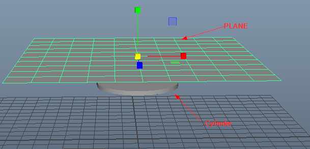

Open a new Scene
Make aplane and cylinder

Increase the subdivisions of plane


Switch to FX

Select the plane and attach nCloth property
 now Outliner looks like
now Outliner looks like 
Select cylinder and attach nCloth passive collider

Hit play button on animation panel and pause when you get the desired deformation
Exporting the cloth
Select the cloth and delete all history and freeze transformation


Open Outliner and delete all three

Open Display and enable Shapes option

Select the cloth and delete the plane

Export it as FBX